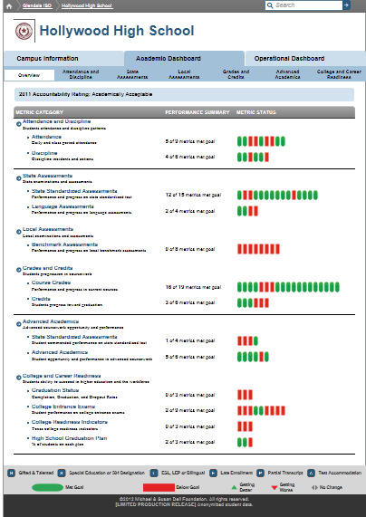

Dashboard Metrics


Overview
Background
Campus Overview
The Campus Profile Summary Snapshot displays the FERPA complaint dashboard, automatically generates intervention statements needing attention and high level categorized metric status information.
User Interface
Dashboard Example
Figure 1 shows the Dashboard Overview metric as seen on the campus dashboard.

Visibility Rules
The metric is grayed-out if any of the following apply:
- Student data is not loaded
- Student data does not exist
Status Definition
- Each Status Indicator is associated with an individual metric, such as under Assessments each “tic tac” maps to state assessment Performance, state assessment Modified, state assessment Alt, etc.
- If a metric meets the ”green” status threshold, it will have a “green” status on the Overview page.
- If a metric meets the “red” status threshold, it will have a “red” status on the Overview page as well.
- The mouse-over will display the metric name, description and status
Student Profile Summary
- The Student Profile Summary requirements will be determined in the future.
Academic Dashboard Category Summary View
- The Overview section displays the container level metrics, Attendance and Discipline, Assessments, Grades and Credits, Advanced Academics and College and Career Readiness
- All Metric Categories are enabled
- Status is shown per metric within each Category
- Metric names and “tic tacs” will navigate to the appropriate section when clicked
User Interface
- Mouse-over the statement may include Help information
Business Rules
Assumptions
- Comprehensive student intervention indicator content will be defined at a later date
- Statements for each indicator will be predefined for each indicator
- Outlier performance metrics must be defined
- Only state assessment statements shall be implemented